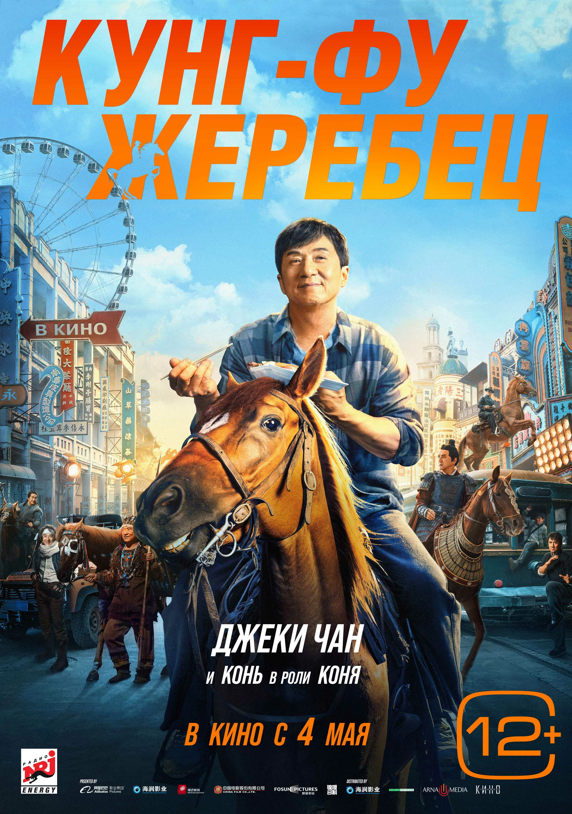
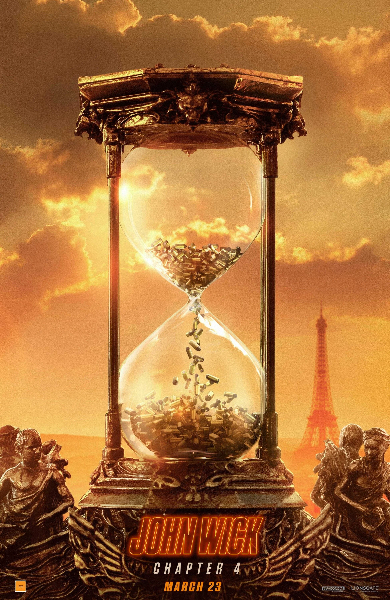
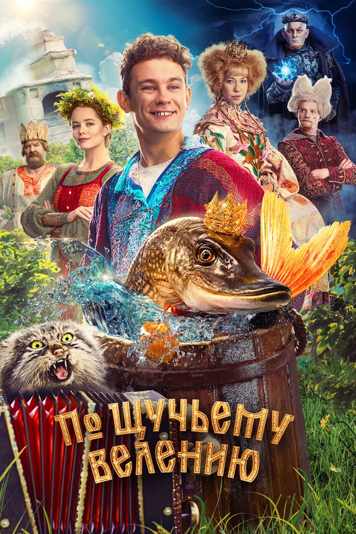
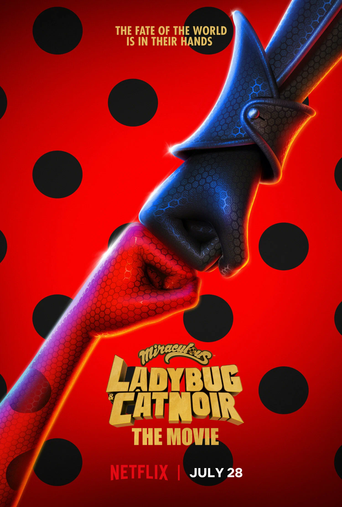
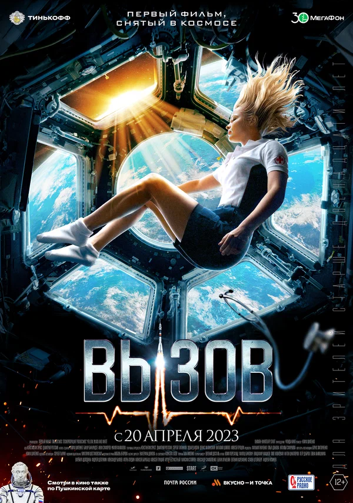

Топ - 10 фильмов 2023-го года
-
1. Оппенгеймер

Оценка по версии кинопоиска: 8.2
История жизни американского физика-теоретика Роберта Оппенгеймера, который во времена Второй мировой войны руководил Манхэттенским проектом — секретными разработками ядерного оружия.
Смотреть трейлер -
2. Кунг-фу жеребец
Оценка по версии кинопоиска: 8.0
Ло — в прошлом известный каскадер, который теперь еле сводит концы с концами. Вскоре дело доходит до того, что в счет долгов у него хотят отобрать коня. Но каскадер дает отпор коллекторам, явившимся за животным. Видео этого поединка с эффектными трюками попадает в сеть, после чего Лу и его жеребец снова становятся известными. Для полного счастья осталось наладить отношения с единственной дочерью, и это будет совсем непросто, ведь у девушки накопилось много обид на отца.
Смотреть трейлер -
3. Джон Уик 4
Оценка по версии кинопоиска: 7.1
Оставляя за собой горы трупов, Джон Уик продолжает скрываться от всевозможных наёмных убийц, и теперь охоту на него возглавляет молодой и честолюбивый член Правления по имени Маркиз. Два управляющих отелями «Континенталь» в Нью-Йорке и Осаке, решившие по старой дружбе помочь своенравному киллеру, уже жестоко за это поплатились, но внезапно Джон узнаёт способ выбраться из этой, казалось бы, безвыходной ситуации.
Смотреть трейлер -
4. По щучьему велению
Оценка по версии кинопоиска: 7.8
Если ты идешь на рыбалку — будь готов к тому, что вытянешь рыбу своей мечты, волшебную Щуку, которая может исполнить три любых твоих желания. Только Емеля спустил два желания на ветер, а третье решил приберечь. Поэтому, чтобы добиться руки царской дочери Анфисы, придется ему действовать без волшебной силы, самому. А помогать ему будет Щука, которая без своей шкурки предстает обычной девушкой Василисой. Вместе им предстоит найти скатерть-самобранку, встретиться с Котом Баюном, отправиться в мрачное царство Кощея и понять, что настоящее чудо — это быть с тем, кого любишь.
Смотреть трейлер -
5. Стражи Галактики. Часть 3
Оценка по версии кинопоиска: 8.1
Едва Стражи Галактики обосновываются на Забвении, на них нападает Адам Уорлок, обладающее сверхспособностями существо, созданное своей «матерью» и Верховной Жрицей суверенов Аишей. В бою Небуле удаётся победить Адама, но Ракета получает серьёзные травмы, а Стражи не могут его вылечить из-за встроенного чипа смерти, созданного компанией «Оргокорп». Они отправляются в главный штаб компании на поиски кода отмены.
Смотреть трейлер -
6. Леди Баг и Супер-Кот: Пробуждение силы
Оценка по версии кинопоиска: 7.1
В обыкновенной французской школе учатся девочка Маринетт и мальчик Адриан, в которого она влюблена. Казалось бы, классическая история первой любви, но эти ребята совсем не те, за кого себя выдают. Когда городу угрожает опасность, Маринетт превращается в супергероиню Леди Баг, а Адриан — в Супер-Кота. Их невероятные способности помогают бороться со злом, но при этом никто из них не знает, кто на самом деле скрывается под маской.
Смотреть трейлер -
7. Повелитель ветра
Оценка по версии кинопоиска: 7.7
Знаменитый российский путешественник Федор Конюхов, за плечами которого покорение земных полюсов, океанов и высочайших вершин, отправляется в новое, свое самое опасное путешествие. Ему предстоит обогнуть Землю на воздушном шаре в полном одиночестве. Полет готовит целая команда, но нельзя предвидеть все опасности, которые ждут путешественника в экстремальных условиях. Конюхов попадает в ураган — без связи, без сна, почти без воздуха он должен идти только вперед, чтобы вернуться к тем, кого любит.
Смотреть трейлер -
8. Снегирь
Оценка по версии кинопоиска: 7.1
Студенты мореходки Никита и Максим отправляются проходить практику на рыболовное судно «Снегирь». Суровые моряки совсем не рады, что теперь им придётся не только учить двух подростков, но и следить, как бы те не испортили снаряжение и не свалились за борт в холодные волны Баренцева моря. Пока новенькие с переменным успехом притираются к команде и новым условиям, улов оставляет желать лучшего, и капитан решает ненадолго заплыть в территориальные воды Норвегии.
Смотреть трейлер -
9. Вызов
Оценка по версии кинопоиска: 7.5
Торакальный хирург Женя Беляева за месяц должна подготовиться к космическому полету, чтобы отправиться на МКС и спасти заболевшего космонавта. Ей придётся преодолеть неуверенность и страхи, а также провести сложнейшую операцию в условиях невесомости, от которой зависят шансы космонавта вернуться на Землю живым.
Смотреть трейлер -
10. Три мушкетера: Д’Артаньян
Оценка по версии кинопоиска: 7.0
Франция, 1627 год. Молодой гасконец Д’Артаньян направляется в Париж, чтобы стать мушкетёром, но по пути попадает в заварушку, из которой чудом выбирается живым. По прибытии в столицу парень умудряется повздорить и спровоцировать на дуэль трёх знаменитых мушкетёров — Атоса, Портоса и Арамиса. Но внезапно Д’Артаньян заводит с троицей дружбу, умудряется получить благодарность короля и даже оказаться в эпицентре дворцового заговора против королевы.
Смотреть трейлер